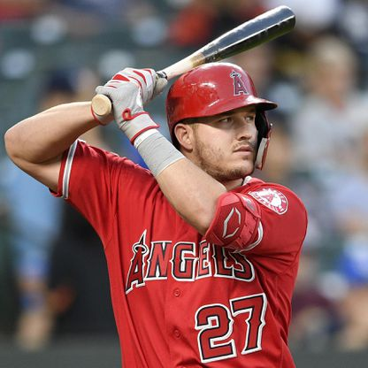

Players

Mookie Betts
Position: RF
Bats: Right
Throws: Right
Ht: 5'9"
Team: Dodgers
Mookie Betts began his career on the Red Sox, where he became the first player in MLB history to win the MVP, Silver Slugger, Gold Glove, batting title, and World Series in the same season. In 2020, he was traded to the Dodgers and signed the second-largest extension in MLB history, for 12 years, $365 million, and proceeded to win a second world championship.

| Year | Tm | BA | HR | RBI | SB | OBP | OPS |
|---|---|---|---|---|---|---|---|
| 2015 | BOS | .291 | 18 | 77 | 21 | .341 | .820 |
| 2016 | BOS | .318 | 31 | 113 | 26 | .363 | .897 |
| 2017 | BOS | .264 | 24 | 102 | 26 | .344 | .803 |
| 2018 | BOS | .346 | 32 | 80 | 30 | .438 | 1.078 |
| 2019 | BOS | .295 | 29 | 80 | 16 | .391 | .915 |
| 2020 | LAD | .292 | 16 | 39 | 10 | .366 | .927 |

Alex Bregman
Position: 3B
Bats: Right
Throws: Right
Ht: 6'0"
Team: Astros
Alex Bregman has been the starting third baseman for the Astros since 2017, when he won his first World Series. He is a two-time All Star and won the Silver Slugger in 2019 while also finishing 2nd in AL MVP voting. He is also the first 3rd baseman to hit 50 doubles and 30 home runs in a season.

| Year | Tm | BA | HR | RBI | SB | OBP | OPS |
|---|---|---|---|---|---|---|---|
| 2016 | HOU | .264 | 8 | 34 | 2 | .313 | .791 |
| 2017 | HOU | .284 | 19 | 71 | 17 | .352 | .827 |
| 2018 | HOU | .286 | 31 | 103 | 10 | .394 | .926 |
| 2019 | HOU | .296 | 41 | 112 | 5 | .423 | 1.015 |
| 2020 | HOU | .242 | 6 | 22 | 0 | .350 | .801 |
Kris Bryant
Position: 3B
Bats: Right
Throws: Right
Ht: 6'5"
Team: Cubs
Kris Bryant is a three-time All Star as the starting third baseman for the Cubs. He won the National League Rookie of the Year award in 2015 and helped break the Cubs' 108-year World Series drought in 2016 by winning NL MVP. In 2017, he became the fastest player to reach 100 home runs.

| Year | Tm | BA | HR | RBI | SB | OBP | OPS |
|---|---|---|---|---|---|---|---|
| 2015 | CHC | .275 | 26 | 99 | 13 | .369 | .858 |
| 2016 | CHC | .292 | 39 | 102 | 8 | .385 | .939 |
| 2017 | CHC | .295 | 29 | 73 | 7 | .409 | .946 |
| 2018 | CHC | .272 | 13 | 52 | 2 | .374 | .834 |
| 2019 | CHC | .282 | 31 | 77 | 4 | .382 | .903 |
| 2020 | CHC | .206 | 4 | 11 | 0 | .293 | .644 |

Jacob DeGrom
Position: SP
Bats: Left
Throws: Right
Ht: 6'4"
Team: Mets
Jacob DeGrom is considered the most dominant pitcher in baseball today. With an upper-90s fastball, low-90s slider, and low-90s changeup, he has dominated since his debut in 2015, becoming a three time All-Star, NL Rookie of the Year award winner, and two-time Cy Young Award winner.

| Year | Tm | W | L | ERA | IP | SO | WHIP |
|---|---|---|---|---|---|---|---|
| 2014 | NYM | 9 | 6 | 2.69 | 140.1 | 144 | 1.14 |
| 2015 | NYM | 14 | 8 | 2.54 | 191.0 | 205 | 0.98 |
| 2016 | NYM | 7 | 8 | 3.04 | 148.0 | 143 | 1.20 |
| 2017 | NYM | 15 | 10 | 3.53 | 201.1 | 239 | 1.19 |
| 2018 | NYM | 10 | 9 | 1.70 | 217.0 | 269 | 0.91 |
| 2019 | NYM | 11 | 8 | 2.43 | 204.0 | 255 | 0.97 |
| 2020 | NYM | 4 | 2 | 2.38 | 68.0 | 104 | 0.96 |

Fernando Tatis, Jr.
Position: SS
Bats: Right
Throws: Right
Ht: 6'3"
Team: Padres
Fernando Tatis, Jr. is one of the most exciting players in the game today. After winning the Silver Slugger Award in 2020, he signed the third-largest extension in MLB history, at 14 years, $340 million. He is known for having a rare combination of power, speed, and fielding prowess for a shortshop.

| Year | Tm | BA | HR | RBI | SB | OBP | OPS |
|---|---|---|---|---|---|---|---|
| 2019 | SDP | .317 | 22 | 53 | 16 | .379 | .969 |
| 2020 | SDP | .277 | 17 | 45 | 11 | .366 | .937 |

Mike Trout
Position: CF
Bats: Right
Throws: Right
Ht: 6'2"
Team: Angels
Mike Trout is the premier five-tool player in baseball and one of the best players in the game. He has won the AL Rookie of the Year award, and is an 8-time All-Star and 3-time AL MVP award winner. He signed the largest contract extension in MLB history in 2019, for 12 years, $426 million.
Gerrit Cole
Position: SP
Bats: Right
Throws: Right
Ht: 6'4"
Team: Yankees
Gerrit Cole was the first-overall draft pick out of UCLA in 2011. He played for the Pirates and Astros, where he set a record of nine consecutive games with at least 10 strikeouts and became the fastest player to reach 300 strikeouts in a season. In 2019, he signed the largest contract ever for a pitcher, at 9 years, $324 million.


Christian Yelich
Position: OF
Bats: Left
Throws: Right
Ht: 6'3"
Team: Brewers
Christian Yelich was a first-round draft pick for the Marlins in 2010. He has won a Gold Glove, Silver Slugger Award (3x), and NL MVP. Yelich also became the first player to hit two cylces against the same team in the same season (the Reds), and the fifth to do so within the span of two weeks.


Nolan Arenado
Position: 3B
Bats: Right
Throws: Right
Ht: 6'2"
Team: Cardinals
Nolan Arenado played his entire big-league career with the Rockies before being traded to the Cardinals in 2021. During that time Arenado won eight Gold Glove Awards, the only player to do so in each of his first eight seasons. He is also an excellent hitter, having led the league in RBIs and HRs twice and winning the Silver Slugger Award four times.